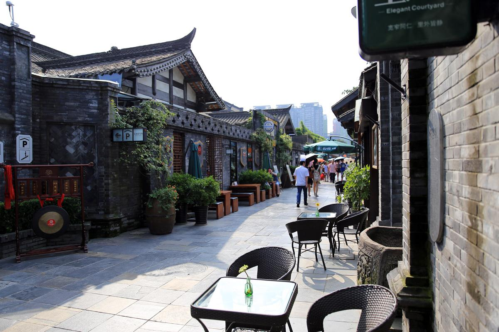

宽巷子是“闲生活”区，以旅游休闲为主题，主要针对怀旧休闲客群，是以精品酒店、私房餐饮、特色民俗餐饮、特色休闲茶馆、特色休闲酒馆、特色客栈、特色企业会所、SPA为主题的情景消费游憩区。窄巷子是“慢生活”区，以品牌商业为主题，针对主题精品消费的目的性消费客群。该区域将打造成以各国西餐、各地品牌餐饮、轻便餐饮、精品饰品、艺术休闲、特色文化主题店为主的精致生活品味区。井巷子是“新生活”区，以时尚年轻为主题，针对都市年轻人。是以酒吧、夜店、甜品店、婚场、小型特色零售、轻便餐饮、创意时尚为主题的时尚动感娱乐区。为了更充分地展示宽窄巷子所蕴含的老成都生活精神，充实宽窄巷子的文化旅游内涵，打造“成都原真生活体验馆”，以博物馆的形态再现老成都的生活，通过方言、小吃、礼仪等对成都原真生活断面进行复原和展示，并通过参与互动体验项目，让观众可以在这里回到老成都生活情景中，体验老成都的生活乐趣。
